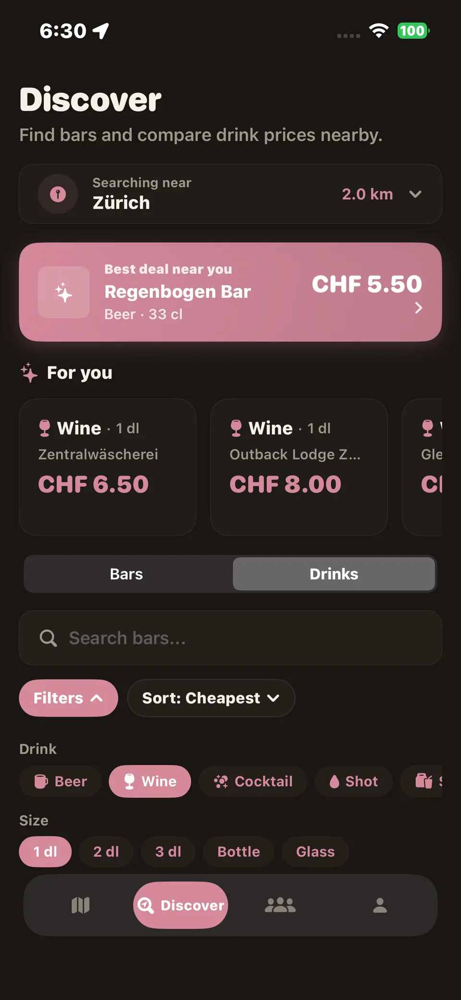
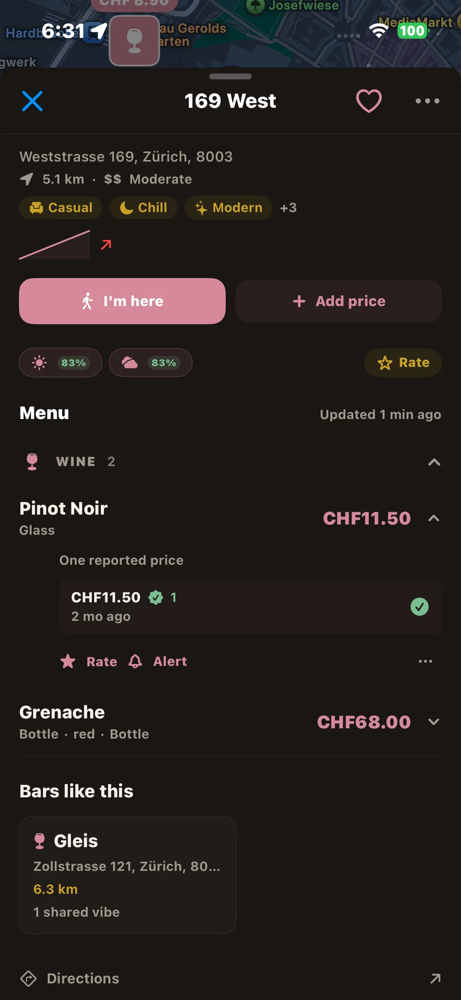

BarTab
iOS drink price App Coming to the App Store whenever i got the money bartap.info RepositoryA drink in one Zurich bar can cost twice what the bar two tram stops away charges, and you only find out when the bill arrives. BarTab lets fellow ethanol enjoyers report what they actually paid, so anyone can look up a bar before ordering. Prices are crowdsourced, never scraped: trust is the point.
The whole stack: a SwiftUI app with MapKit, a Supabase backend for auth, database and Edge Functions in TypeScript for waitlist and price alerts, the plain HTML site at bartap.info, and CI that builds the app on every push.
No ads and no paid ranking: bars cannot buy their way up. Old prices receive a re-confirmation prompt and sink in search when nobody confirms them any more, which keeps the map from going stale. The app is free, and the optional tip jar is the only paid surface.



Screens from the repository. App Store release pending.